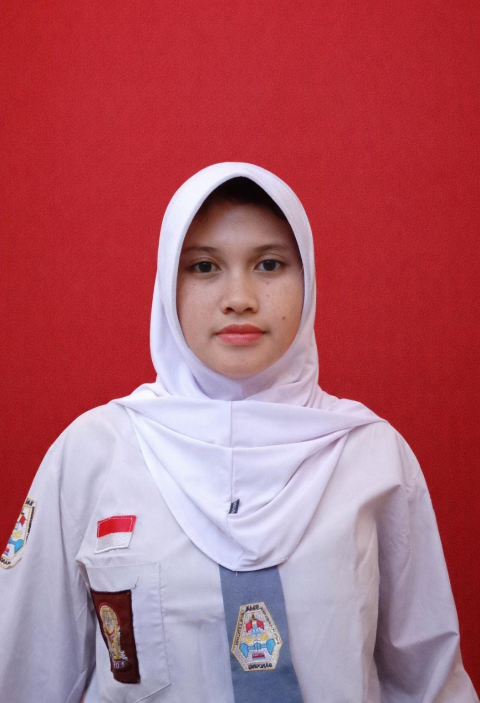

PMR
Kegiatan ekstrakurikuler

Curriculum Vitae
SMA KP BALEENDAH · Kelas XII
Pelajar | Pembelajar sepanjang hayat
Siswi SMA KP Baleendah yang memiliki minat pada membaca, menulis, pembelajaran bahasa, serta bidang kimia. Senang mengembangkan pengetahuan dan mengeksplorasi pengalaman belajar baru.
Kegiatan ekstrakurikuler
Pengalaman akademik
Kegiatan kerelawanan
Kegiatan seminar